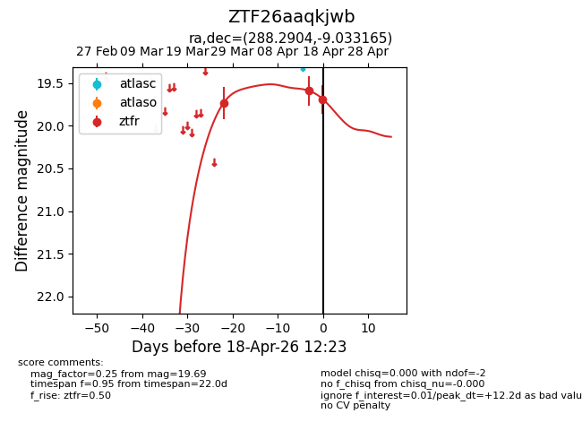
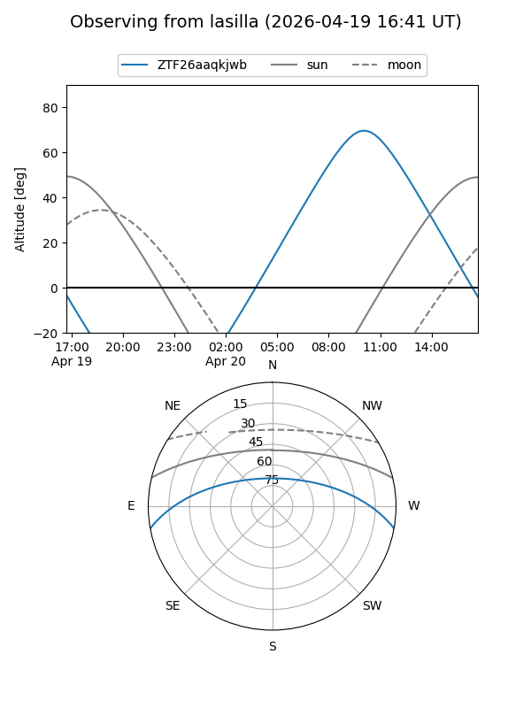
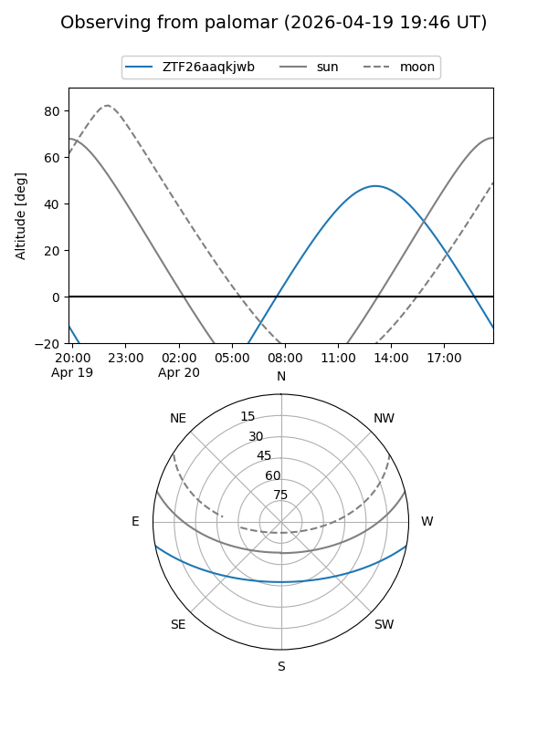
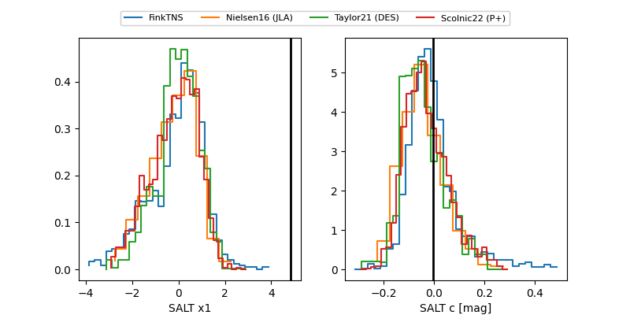

ZTF26aaqkjwb
Target ZTF26aaqkjwb at 2026-04-18 12:28
Aliases and brokers:
FINK: link
Lasair: link
ALeRCE: link
alt names
ZTF26aaqkjwb (ztf,fink_ztf)
Coordinates:
equatorial (ra, dec) = 288.2904,-9.03316
equatorial (HMS+DMS) = 19:13:09.69,-09:01:59.39
galactic (l, b) = (27.2908,-8.90406)
Flags:
Photometry:
last ztfr=19.69
3 ztfr detections
Lightcurve

Visibility


Additional plots
